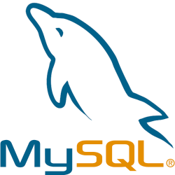
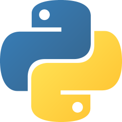

Tecnologias



Desenvolvedor Web e Python, Administração de Servidores Linux
Eu sou Guilherme Salustiano. Sou paulista, tenho 21 anos e sou apaixonado pelo mundo da tecnologia. Gosto de futebol, torcedor do Corinthians, assim como basquete, que pratiquei durante um tempo.
Minha primeira formação foi como Técnico em Desenvolvimento de Sistemas integrado ao Ensino Médio, pela ETEC Bento Quirino, entre os anos de 2020 e 2022. Aprendi noções sobre Fundamentos de Informática, Lógica de Programação, Programação Web, Banco de Dados, dentre outras. Essa formação foi fundamental para abrir meus olhos para o mundo da Tecnologia da Informação, e atribuo muito do que aprendi inicialmente ao curso.
Desde o ano de 2023, estou fazendo uma graduação no curso de Ciência da Computação na UNIP Campinas (Universidade Paulista), e irei me formar no final de 2026. O curso forneceu conhecimentos sobre a base teóricas, além de reforçar e aprimorar conhecimentos já adquiridos no curso de Desenvolvimento de Sistemas. Abriu oportunidades no mercado de trabalho, inclusive permitindo minha primeira experiência profissional como estagiário na Unicamp.
Em abril de 2024, dei início a minha primeira experiência profissional como Estagiário de TI na Unicamp, na unidade do Nudecri / Labjor. Permaneci por 2 anos, e foi muito importante para fixar conhecimentos relacionados a manutenção e administração de servidores Linux, manutenção de computadores Windows e Linux, desenvolvimento de Sistemas Web, instalação e manutenção de sites Wordpress, manutenção da rede cabeada e wifi, além de suporte ao usuário. Conheci e apliquei o uso de diversas tecnologias para as atividades exercidas no período.

